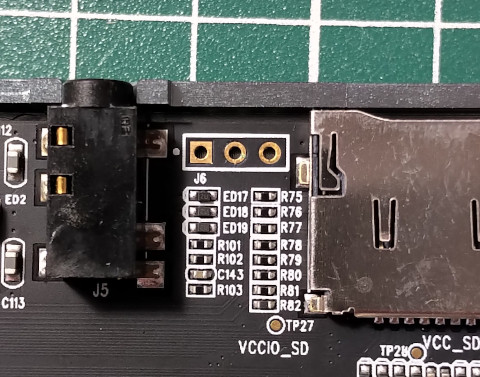
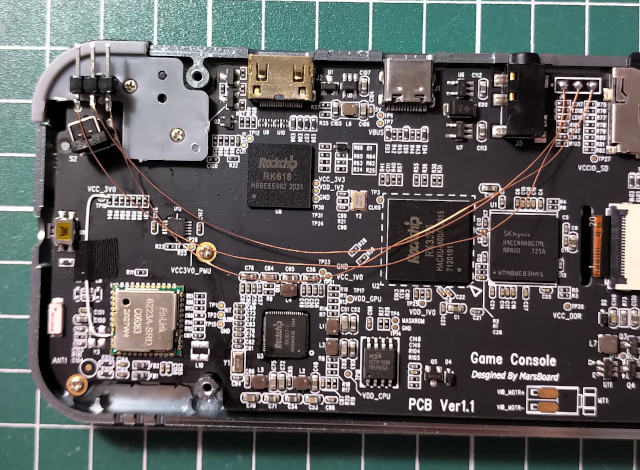
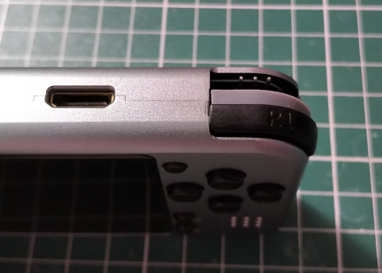

Z-Pocket Game Pro(ZPG Pro)
焊接UART腳位
TX、RX、GND

跳線

好像有點醜...

Baudrate: 115200bps
U-Boot 2017.09-dirty (Aug 07 2020 - 23:51:06 -0400)
PreSerial: 2
DRAM: 992 MiB
Sysmem: init
Relocation Offset is: 3dbc0000
Using default environment
dwmmc@ff370000: 1, dwmmc@ff390000: 0
sfc nor id: b 40 18
GUID Partition Table Header signature is wrong: 0xFFFFFFFFFFFFFFFF != 0x5452415020494645
Repair the backup gpt table OK!
Bootdev(atags): spinor 1
PartType: EFI
init_resource_list: failed to get resource part, ret=-1
RKPARM: Invalid parameter part table
dtb in resource read fail, try dtb in spi flash
Device 1: Vendor: 0x0308 Rev: V1.00 Prod: rkflash-SpiNor
Type: Hard Disk
Capacity: 16.0 MB = 0.0 GB (32768 x 512)
... is now current device
spinor read: device 1 block # 8192, count 200 ... 200 blocks read: OK
I2c speed: 400000Hz
PMIC: RK8170 (on=0x80, off=0x00)
vdd_logic 1100000 uV
vdd_arm 1100000 uV
*** Warning - bad CRC, using default environment
In: serial
Out: serial
Err: serial
rockchip_get_boot_mode: Could not found misc partition
boot mode: None
CLK: (sync kernel. arm: enter 600000 KHz, init 600000 KHz, kernel 600000 KHz)
apll 600000 KHz
dpll 664000 KHz
cpll 24000 KHz
npll 1188000 KHz
gpll 1200000 KHz
aclk_bus 200000 KHz
hclk_bus 150000 KHz
pclk_bus 100000 KHz
aclk_peri 200000 KHz
hclk_peri 150000 KHz
pclk_pmu 100000 KHz
** Unable to read file manufacture **
Enable charge animation display
Exit charge: due to charger offline
Rockchip UBOOT DRM driver version: v1.0.1
Using display timing dts
Detailed mode clock 17000 kHz, flags[a]
H: 0320 0450 0454 0584
V: 0480 0482 0483 0485
bus_format: 100e
final DSI-Link bandwidth: 450 Mbps x 1
** Unable to read file logo.bmp **
logo.bmp file not found! filesize = 0
spinor read: device 1 block # 8392, count 400 ... 400 blocks read: OK
Uncompressed size: 460856 = 0x70838
switch to partitions #0, OK
mmc1 is current device
Net: Net Initialization Skipped
No ethernet found.
Hit key to stop autoboot('CTRL+C'): 0
switch to partitions #0, OK
mmc1 is current device
reading boot.ini
958 bytes read in 2 ms (467.8 KiB/s)
## Executing script at 00800800
reading Image
16351240 bytes read in 691 ms (22.6 MiB/s)
reading uInitrd
13616033 bytes read in 574 ms (22.6 MiB/s)
reading rk3326-marsboard-linux.dtb
90993 bytes read in 7 ms (12.4 MiB/s)
## Loading init Ramdisk from Legacy Image at 01100000 ...
Image Name: uInitrd
Image Type: AArch64 Linux RAMDisk Image (uncompressed)
Data Size: 13615969 Bytes = 13 MiB
Load Address: 00000000
Entry Point: 00000000
Verifying Checksum ... OK
## Flattened Device Tree blob at 01f00000
Booting using the fdt blob at 0x1f00000
'reserved-memory' region@110000: addr=110000 size=f0000
Loading Ramdisk to 310b7000, end 31db3361 ... OK
Loading Device Tree to 000000003109d000, end 00000000310b6370 ... OK
reserve drm-loader-logo offset = 59020
reserve drm-logo mem = 000000003df00000, size = 1662976
Adding bank: 0x00200000 - 0x08400000 (size: 0x08200000)
Adding bank: 0x0a200000 - 0x40000000 (size: 0x35e00000)
Total: 4188.824 ms
Starting kernel ...
[ 0.252586] genirq: Setting trigger mode 8 for irq 171 failed (gic_set_type+0x0/0x64)
[ 0.922047] OF: graph: no port node found in /mipi-dphy-rx0@ff2f0000
[ 0.934823] rk-vcodec vpu_combo: failed on clk_get clk_cabac
[ 0.944397] rk-vcodec vpu_combo: could not find power_model node
[ 0.971241] rockchip-drm display-subsystem: failed to bind ff450000.dsi (ops 0xffffff8008afb9c0): -517
[ 0.986464] panel-simple-dsi ff450000.dsi.0: failed to get power regulator: -517
[ 0.994577] mali ff400000.gpu: Failed to get regulator
[ 0.999767] mali ff400000.gpu: Power control initialization failed
[ 2.183323] rk817-battery rk817-battery: fb_temperature missing!
[ 2.189423] rk817-battery rk817-battery: energy_mode missing!
[ 2.195210] rk817-battery rk817-battery: zero_reserve_dsoc missing!
[ 2.226661] rk817-charger rk817-charger: power_dc2otg missing!
[ 2.232607] rk817-charger rk817-charger: otg5v_suspend_enable missing!
[ 2.271275] OF: graph: no port node found in /rkisp1@ff4a0000
[ 2.277101] rkisp1: Failed to register subdev notifier(-19)
[ 2.294088] rk_tsadcv2_temp_to_code: Invalid conversion table: code=4095, temperature=2147483647
[ 2.325582] cpu cpu0: failed to find power_model node
[ 2.434387] rockchip-dmc dmc: unable to get devfreq-event device : dfi
[ 2.446291] rksfc_base v1.1 2016-01-08
[ 2.454811] rockchip-pinctrl pinctrl: pin gpio2-19 already requested by 2-0050; cannot claim for rk817-codec
[ 2.464693] rockchip-pinctrl pinctrl: pin-83 (rk817-codec) status -22
[ 2.471158] rockchip-pinctrl pinctrl: could not request pin 83 (gpio2-19) from group i2s1-2ch-mclk on device rockchip-pinctrl
[ 2.482549] rk817-codec rk817-codec: Error applying setting, reverse things back
[ 2.502811] rockchip-drm display-subsystem: failed to bind ff450000.dsi (ops 0xffffff8008afb9c0): -517
[ 2.514531] mali ff400000.gpu: Failed to get leakage
[ 2.527725] rockchip-dmc dmc: Failed to get leakage
[ 2.533414] rockchip-dmc dmc: failed to get vop bandwidth to dmc rate
[ 2.539941] rockchip-dmc dmc: failed to get vop pn to msch rl
[ 2.562897] devfreq dmc: Couldn't update frequency transition information.
[ 2.572625] asoc-simple-card rk817-sound: ASoC: no sink widget found for MIC_IN
[ 2.579947] asoc-simple-card rk817-sound: ASoC: Failed to add route Mic Jack -> direct -> MIC_IN
[ 2.588736] asoc-simple-card rk817-sound: ASoC: no source widget found for HPOL
[ 2.596045] asoc-simple-card rk817-sound: ASoC: Failed to add route HPOL -> direct -> Headphone Jack
[ 2.605197] asoc-simple-card rk817-sound: ASoC: no source widget found for HPOR
[ 2.612508] asoc-simple-card rk817-sound: ASoC: Failed to add route HPOR -> direct -> Headphone Jack
[ 2.622442] devfreq ff400000.gpu: Couldn't update frequency transition information.
[ 2.631877] get_framebuffer_by_node: failed to get logo,offset
[ 2.637755] rockchip-drm display-subsystem: failed to show loader logo
[ 4.594447] cgroup: cgroup2: unknown option "nsdelegate"
[ 5.458879] systemd[1]: Failed to start Remount Root and Kernel File Systems.
[FAILED] Failed to start Remount Root and Kernel File Systems.
Ubuntu 20.04 LTS marsboard ttyFIQ0
marsboard login: